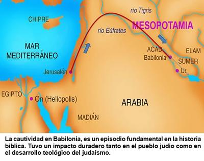

Entre los años 597 y 538 AEC, el pueblo judío vivió una de las etapas más decisivas de su historia: su exilio en Babilonia. Tras la conquista de Jerusalén por el rey Nabucodonosor II, miles de ellos fueron deportados a Mesopotamia, el corazón cultural del mundo antiguo. Pero aquel aparente castigo —según la narrativa bíblica— se convirtió en un punto de inflexión que transformó la religión hebrea primitiva en el embrión del futuro pensamiento judeocristiano.


Sin embargo, aquel destierro terminaría. En el año 539 AEC, Ciro el Grande, fundador del Imperio Persa, conquistó Babilonia sin derramamiento de sangre. Y un año después, en el 538 AEC, emitió un decreto que permitió a los judíos regresar a Jerusalén y reconstruir su Templo. Ese gesto político, interpretado por los hebreos como un «acto divino», marcó el fin de un exilio de 70 años… Pero los que volvieron no eran los mismos que habían partido: traían consigo una nueva visión del cosmos, del bien y del mal, y del destino humano, moldeada por la sofisticada cosmovisión persa y mesopotámica.
Antes del exilio, el dios de Israel, Yahvé, era un dios nacional, un protector de clanes, con un carácter celoso y guerrero. Y la religión hebrea carecía de una teología desarrollada en temas como el más allá, los ángeles o los demonios. No existía un concepto estructurado de «cielo» o de «infierno», ni una lucha cósmica entre el bien y el mal.
Pero en Babilonia y Persia los judíos se toparon con el zoroastrismo, la religión de Zaratustra (Zoroastro) que dominaba el pensamiento religioso persa. Y de ella aprendieron que el universo estaba gobernado por dos principios opuestos: Ahura Mazda, el dios de la luz y la verdad, y Ahrimán, el espíritu del mal y la oscuridad. Una visión dualista que tuvo un impacto profundo en la mentalidad hebrea.
Surgió de allí en ellos la idea de una batalla entre fuerzas espirituales, el concepto de ángeles y demonios, y la expectativa de un juicio final donde los justos serían recompensados y los malvados castigados. Todo esto, ausente en los textos hebreos más antiguos, comenzó a filtrarse en los escritos posteriores al exilio: Daniel, Isaías, Ezequiel, Zacarías, y otros, que muestran una clara influencia persa.
Fue durante el contacto con el zoroastrismo, cuando los judíos incorporaron la creencia en ángeles como mensajeros y guardianes. Nombres como Miguel, Rafael o Gabriel comenzaron a aparecer en los textos hebreos tardíos, teniendo cada uno un rol específico, imitando a los «ahuras» y «yazatas» persas: espíritus encargados de tareas divinas.
Asimismo, la idea de un «más allá», de un cielo luminoso para los buenos y un infierno de castigo para los malos, tampoco procede del judaísmo original, sino del pensamiento persa. Antes del destierro en Babilonia, los judíos muertos, tanto los buenos como los malos, iban al Seol o Sheol, un lugar gris e indistinto, donde no existía recompensa ni castigo moral. El Sheol no era un lugar físico de aplicación de torturas, sino sólo un estado de «oscuridad tras la muerte».
Sin embargo, después del contacto con Persia, el Sheol se transformó en una antesala del juicio divino, y más tarde en el infierno teológico del cristianismo. Y es que la palabra «infierno» como tal, aparece por primera vez en la Biblia pronunciada por Jesús (en Mateo 5:22). Y como explica el ex evangelista ateo estadounidense Dan Barker: «De hecho, la doctrina cristiana del infierno se originó con Jesús. En el Antiguo Testamento, el infierno no es más que la muerte, o la tumba. Con Jesús, el infierno se convirtió en un lugar de tormento eterno. En Marcos 9:43 Jesús dice que el infierno es el ‘fuego que no puede ser apagado’.»
Pero los judíos no sólo asimilaron ideas persas; también bebieron de la rica mitología mesopotámica. Durante sus 70 años en Babilonia, conocieron epopeyas mucho más antiguas que sus propios relatos. Una de las más notables fue la de Gilgamesh, escrita más de mil años antes que el Génesis, en la que un héroe sobrevive a un gran diluvio enviado por los dioses. El paralelismo con la historia de Noé es evidente: un hombre justo advertido del cataclismo, la construcción de un barco, los animales, la lluvia torrencial y la liberación de aves para hallar tierra seca.
Otro ejemplo claro es la leyenda de la Torre de Babel, que probablemente tiene su origen en la observación de los zigurats mesopotámicos, enormes templos escalonados que se elevaban hacia el cielo. Es posible que el modelo mítico que inspiró la Torre de Babel haya sido el zigurat de Choga Zambil, también conocido como Dur Untash, situado en el actual Irán. Estas edificaciones, construidas en honor a los dioses, simbolizaban la unión entre el cielo y la tierra, y pudieron inspirar la historia bíblica de la soberbia humana castigada con la confusión de lenguas.
Pero además la Biblia afirma que Abraham, el patriarca de las tres grandes religiones monoteístas (judaísmo, cristianismo e islam), procedía de Ur, una ciudad de la antigua Sumer, cerca del río Éufrates, en el actual Irak. Ur fue un importante centro comercial y portuario, y capital de un poderoso reino sumerio. Por lo que si tomamos esto al pie de la letra, entonces el propio fundador del monoteísmo era originario de la cuna de la civilización mesopotámica. Curiosamente, la misma región donde los dioses antiguos como Enlil, Enki e Inanna gobernaban los mitos de la creación, mucho antes de que el nombre de Yahvé apareciera en el horizonte cultural.
Y no sólo eso, la Biblia sitúa el Jardín del Edén donde nacen cuatro ríos: el Pisón, el Gihón o Guijón, el Hidekel o Tigris, y el Éufrates (Génesis 2:10-14). Dos de ellos pueden ser reconocidos en la actualidad, y fluyen por la antigua Mesopotamia, lo cual revela que los autores hebreos situaron su paraíso original en el mismo paisaje geográfico y simbólico que los sumerios y babilonios consideraban el centro del mundo. El Edén bíblico no sería, pues, una revelación divina, sino un eco poético de las fértiles tierras mesopotámicas, donde la vida humana comenzó a organizarse y a imaginar sus dioses.
Así que el exilio babilónico no sólo fue para los hebreos una tragedia nacional; fue también un laboratorio cultural donde tomaron prestadas ideas, símbolos y mitos de sus anfitriones. Y de ese sincretismo nació la religión que más tarde serviría de base al cristianismo y al islam.
De esta forma, aquel dios tribal de los desiertos de Canaán, se convirtió, gracias al pensamiento persa y mesopotámico, en un dios universal, rodeado de ángeles, enfrentado a un demonio, y dueño del destino de las almas.
Así, los mitos de Babilonia y las visiones de Zaratustra se reencarnaron en los textos sagrados que hoy miles de millones veneran como «la palabra de Dios», sin saber que —irónicamente— fueron heredados de los mismos pueblos paganos que sus profetas despreciaban.
[Godless Freeman]
[Crédito de imagen: Teonexus: Fe con raíces. Pensamiento con rumbo.]
Comentarios
Comments powered by Disqus